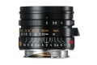
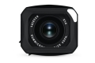

器材库 > 35mm画幅MF定焦镜头 > Summicron-M 28/2 ASPH.

详细规格
镜头类型
广角镜头
发布日期
2016-01-14
焦距
28mm
最大光圈
f/2
最小光圈
f/16
视角（对角）
74°
视角（水平）
65°
视角（垂直）
46°
镜头结构
9片/6组
非球面镜片
1片
光圈叶片
10片
最近对焦距离
70cm
滤镜口径
46mm
镜头卡口
Leica M
防抖
否
颜色
黑色
尺寸
约53×41.4mm
重量
约257g
附件
遮光罩
该产品暂无存档的网友点评
产品图 / 样片
Summicron-M 28/2 ASPH.

Summicron-M 28/2 ASPH.